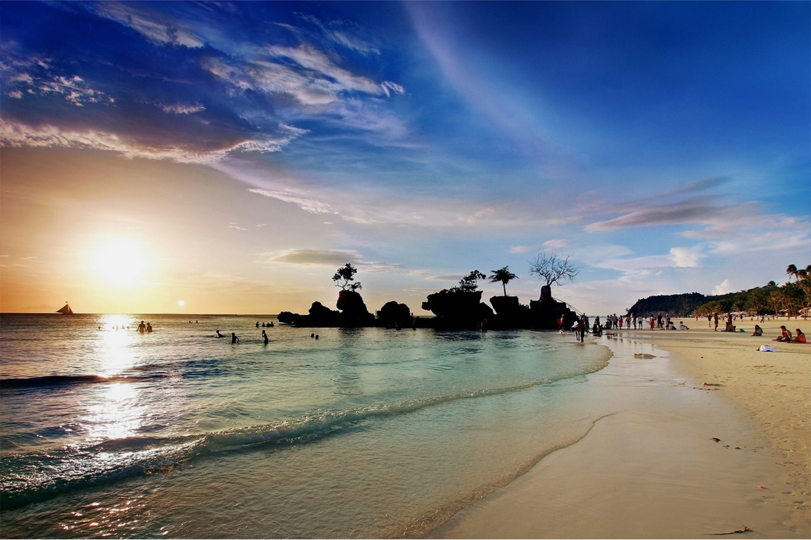

BEST PLACES IN THE PHILIPPINES
Embark on a virtual journey through the enchanting landscapes and vibrant cultures of the Philippines, where each island tells a unique story of paradise waiting to be discovered.

Boracay is a beautiful island in the Philippines, most famous for its pristine white sand beaches and turquoise waters. This amazing paradise, situated in the Western Visayas region, offers a perfect blend of relaxation and adventure. With world-class beaches, vibrant nightlife, and a variety of water activities, Boracay is a top destination for those seeking a lively tropical escape.
Bonifacio Global City (BGC) in Taguig, Metro Manila, is like the cities with a bunch of conyos pareh. With its modern skyline, big companies doing their thing, and tons of places to hang out, it's where business meets fun. Whether you're into architecture, grass, or just exploring amazing spots to eat and chill, BGC is the place to be – making it the best go-to place for both work and play in Metro Manila.
Palawan, Philippines, is home to the famous Puerto Princesa Underground River a UNESCO site known for its amazing limestone caves. This place is a must go if you want to escape the city and have fun at the seas.
Pictures:
https://www.cathaypacific.com/content/dam/focal-point/cx/inspiration/missing-images/manila-bgc-hero.jpg
https://cdn.7stonesboracay.com/2018/07/Best-Boracay-Beach-New-hd-wallpaper.jpg
https://www.cruisemapper.com/images/ports/771-127659e88a63.jpg
Reference:
Muzones, G. (2024, January 17). Best Boracay Island Travel Guide: Tours + Hotels and Resorts. Guide to the Philippines. https://guidetothephilippines.ph/articles/ultimate-guides/boracay-travel-guide
UNESCO World Heritage Centre. (n.d.). Puerto-Princesa Subterranean River National Park. https://whc.unesco.org/en/list/652
Cruz, M., and Cruz, M. (2024, January 15). Top 20 things to do and tourist spots in BGC. Philippine Beach Guide. https://www.philippinebeaches.org/top-things-to-do-in-bgc-taguig-tourist-spots/